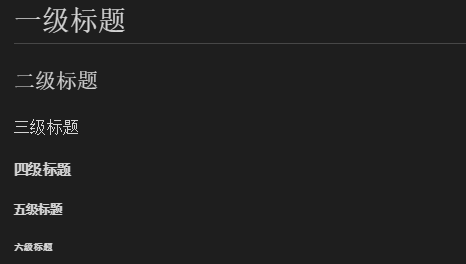
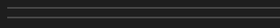
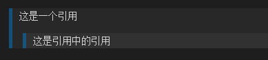
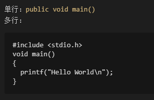

MarkDown简介
Markdown是一种可以使用普通文本编辑器编写的标记语言，通过简单的标记语法，它可以使普通文本内容具有一定的格式。
MarkDown学习前言
以前要想写有格式的文本经常要依靠html编辑器，但html比较复杂，使用起来不方便。如今MarkDown如此之火，原因就在于他能够用简单的标记语法，使文本具有一定的格式性，非常方便。当需要复杂的格式的时候还可以穿插功能强大的html语言。由于我所使用的博客Hexo使用的就是MarkDown语言，所以对我来说学习MarkDown是一件非常重要的事。
MarkDown基础语法
标题
可以使用=和-来标记一级标题和二级标题
格式：
1 | 我展示的是一级标题 |
实例：

可以用多个#标记1-6级标题
用一个#标记一级标题，两个#标记二级标题，以此类推。
格式：
1 | # 一级标题 |
实例：

段落
换行
两种方法
1.两个空格+回车
2.两个回车（空一行）
字体
字体格式包括：斜体、粗体、斜体+粗体 (使用 * 或 _ ) 删除线 (使用~~)
格式：1
2
3
4
5
6
7*斜体*
_斜体_
**粗体**
__粗体__
***粗斜体***
___粗斜体___
~~删除~~
实例：
分隔线
使用3个以上的-或*来生成分割线，要注意此行不能有其他字符
格式：1
2***
---
实例：

引用
引用的文字前加> 可以使用多个>>来进行嵌套
格式：1
2>这是一个引用
>>这是引用中的引用
实例：

代码
代码使用(`)符号来表示(主键盘数字键1左边)
单行代码：1
`public void main()`
多行代码：1
2
3
4
5
6
7(```)
#include <stdio.h>
void main()
{
printf("Hello World\n");
}
(```)
实际代码没有()，此处防止转译
实例：

图片
格式：图片alt为图片下方标注的文字，图片title为鼠标移上去时显示的文字。1
2

实例：

超链接
和图片的格式差不多,没有!符号
格式：1
2[谷歌](https://www.google.com.hk/)
[百度](https://www.baidu.com/)
实例：
表格
格式：1
2
3
4
5表头1 | 表头2 | 表头3
-|-|-
A | B | C
D | E | F
H | I | J
表格内容默认居左显示
把第二行换为-:|-:|-:可以居右显示
把第二行换为:-:|:-:|:-:可以居中显示
实例：
| 表头1 | 表头2 | 表头3 |
|---|---|---|
| A | B | C |
| D | E | F |
| H | I | J |
列表
无序列表
星号(*)、加号(+)或、减号(-)
格式：1
2
3
4
5
6
7
8
9
10
11* AAAAAAAAAAA
* BBBBBBBBBBB
* CCCCCCCCCCC
+ AAAAAAAAAAA
+ BBBBBBBBBBB
+ CCCCCCCCCCC
- AAAAAAAAAAA
- BBBBBBBBBBB
- CCCCCCCCCCC
实例：
- AAAAAAAAAAA
- BBBBBBBBBBB
- CCCCCCCCCCC
- AAAAAAAAAAA
- BBBBBBBBBBB
- CCCCCCCCCCC
- AAAAAAAAAAA
- BBBBBBBBBBB
- CCCCCCCCCCC
有序列表
数字+.
格式：1
2
31. AAAAAAAA
2. BBBBBBBB
3. CCCCCCCC
实例：
- AAAAAAAA
- BBBBBBBB
- CCCCCCCC
列表嵌套列表时须在子列表前加四个空格
实例：
- AAAAAAAA
- aaaaaa
- bbbbbb
- BBBBBBBB
结束语
markdown的功能远不止这些，此处仅仅罗列一些基础。Markdown虽然不难，但想用的得心应手仍然需要多多使用。